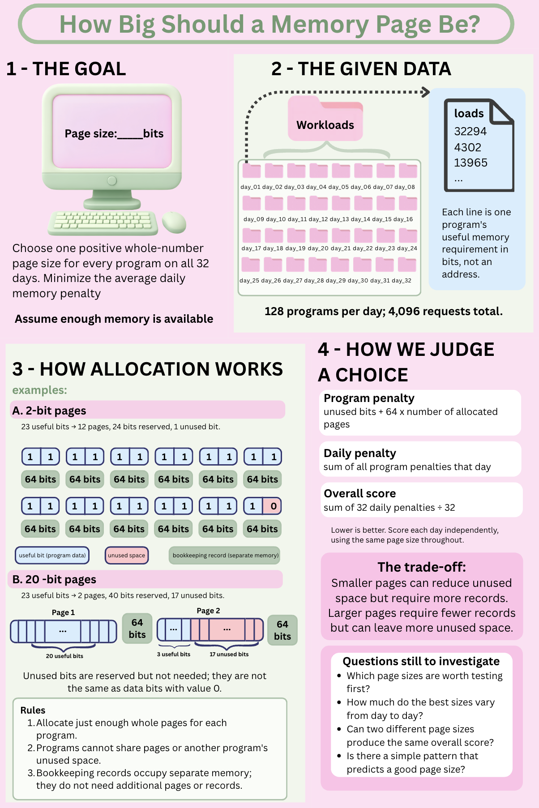

Step 1 · Understand
Step 1 — Understand the Problem
This poster introduces the workload, page-allocation rules, and scoring trade-offs that frame the investigation.

Step 1 · Understand
This poster introduces the workload, page-allocation rules, and scoring trade-offs that frame the investigation.
